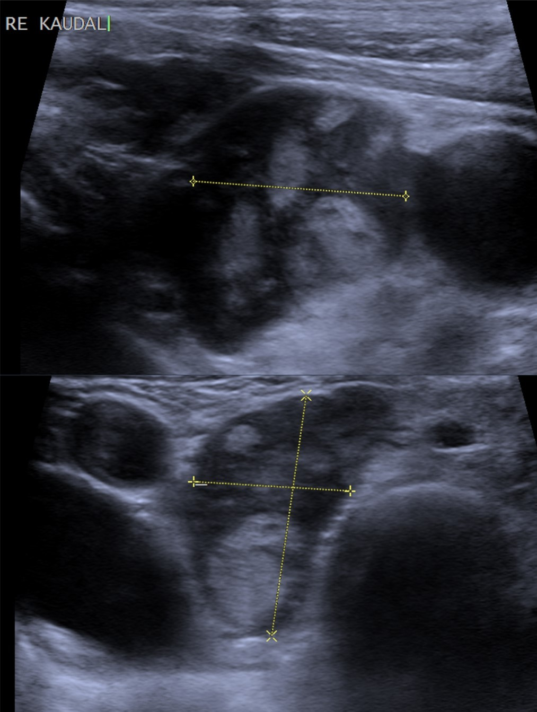

Ficha del catálogo
Adenoma paratiroideo
- Sistema
- Endocrino
- Modalidad
- US
- Región
- Cuello, celda tiroidea posterior
- Dificultad
- Avanzado
Es la causa más frecuente de hiperparatiroidismo primario y consiste en el crecimiento autónomo de una sola glándula paratiroidea que secreta hormona paratiroidea en exceso. Se manifiesta con hipercalcemia, litiasis renal, pérdida de masa ósea y síntomas inespecíficos de fatiga. El diagnóstico es bioquímico y la imagen sirve para localizar la glándula responsable antes de la cirugía.
Técnica
El ultrasonido cervical con transductor lineal de alta frecuencia es la primera herramienta de localización por su disponibilidad y resolución. Se complementa con estudios de medicina nuclear y con tomografía multifásica de cuello, que juntos mejoran la certeza de la localización preoperatoria. La combinación de dos técnicas concordantes permite una cirugía mínimamente invasiva y dirigida.
Qué observar
- Nódulo ovalado marcadamente hipoecoico situado por detrás del lóbulo tiroideo
- Localización habitual cerca del polo inferior o del surco traqueoesofágico
- Plano de separación graso o capsular respecto al parénquima tiroideo
- Vaso nutricio que aborda la lesión por un polo y se ramifica en su periferia
- Tamaño mayor que el de una paratiroides normal, casi siempre superior a un centímetro
- Ausencia de calcificaciones y de componente sólido heterogéneo agresivo
Hallazgos
El adenoma se presenta como una lesión ovalada, homogénea y muy hipoecoica, alargada en sentido craneocaudal y bien delimitada respecto a la tiroides, de la que la separa una interfase ecogénica. El Doppler suele mostrar un vaso polar que se abre en arco periférico alrededor de la lesión, un dato muy útil para diferenciarla de un ganglio. Las variantes quísticas o con lóbulos son menos habituales y pueden confundir si no se identifica el plano tiroideo.
Perlas
Cuando el ultrasonido es negativo conviene pensar en localizaciones ectópicas, sobre todo mediastínicas o intratiroideas, que escapan a la ventana cervical y requieren tomografía multifásica o medicina nuclear. La determinación intraoperatoria de hormona paratiroidea confirma la resección de la glándula responsable.
Diagnóstico diferencial
- Ganglio linfático cervical
- Conserva hilio graso ecogénico central y vascularización de distribución hiliar, no polar.
- Nódulo tiroideo posterior exofítico
- No presenta plano de separación con el parénquima tiroideo y se moviliza junto con la glándula al deglutir.
- Hiperplasia paratiroidea
- Afecta a varias glándulas de forma simultánea y se asocia a enfermedad renal crónica.
- Carcinoma paratiroideo
- Es de mayor tamaño, heterogéneo, de contornos irregulares y con invasión de estructuras vecinas, junto a hipercalcemia grave.
Simuladores
- Vena tiroidea inferior dilatada vista en un solo plano
- Esófago cervical con contenido, que se identifica al pedir deglución
- Ganglio hipoecoico sin hilio visible en el surco traqueoesofágico
Por modalidad
- TC
- El estudio multifásico muestra realce arterial precoz con lavado posterior y localiza glándulas ectópicas mediastínicas.
- RM
- Aporta una alternativa sin radiación, con lesión hiperintensa en secuencias potenciadas en T2 y realce tras contraste.
- US
- Localiza la mayoría de los adenomas cervicales, valora la vascularización polar y permite marcaje o punción cuando hace falta.
Protocolo
Ultrasonido con transductor lineal de alta frecuencia explorando de forma sistemática desde el ángulo mandibular hasta el opérculo torácico, con especial atención a la cara posterior de ambos lóbulos y al surco traqueoesofágico. Se pide deglución para separar estructuras del esófago y se aplica Doppler color a baja velocidad. Ante un estudio no concluyente se complementa con tomografía multifásica de cuello y mediastino superior.
Clasificación
Errores frecuentes
- Confundir un adenoma con un nódulo tiroideo posterior por no buscar el plano de separación
- Limitar la exploración al cuello y no considerar localizaciones ectópicas mediastínicas
- Informar como adenoma un ganglio hipoecoico sin analizar el patrón vascular

paratiroides adenoma hiperparatiroidismo primario hipercalcemia vaso polar localización preoperatoria endocrino